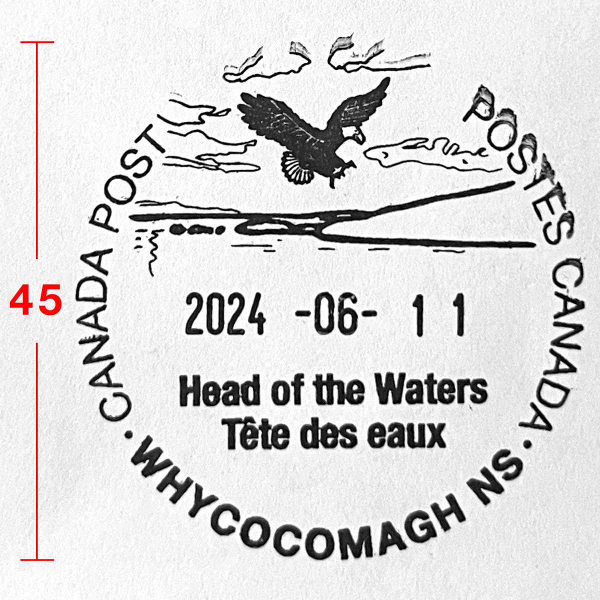

Whycocomagh PO pictorial cancel
Head of the Waters – Tête des eaux
- Status
- Active
- Run dates
- 2022-01-01 to 2033-12-31
- Design
- "Head of the Waters / Tête des eaux"; eagle
- Ink colour
- Black
- Designer
- Unknown
- Post office
- Whycocomagh PO
115 Main St
Whycocomagh, NS
B0E 3M0 - Subjects
- animal, bird, bird of prey, eagle, wildlife, water
Collect it by mail. Send your stamped covers, with a stamped return envelope, to the post office address above. How to collect pictorial cancels by mail · en français
 Christmas Island STN MainGreen
Christmas Island STN MainGreen Christmas Island STN MainRed
Christmas Island STN MainRed Christmas Island STN MainRed
Christmas Island STN MainRed Christmas Island STN MainGreen
Christmas Island STN MainGreen Inverness POCABOT
Inverness POCABOT Port Hood POFIVE BEACHES
Port Hood POFIVE BEACHES